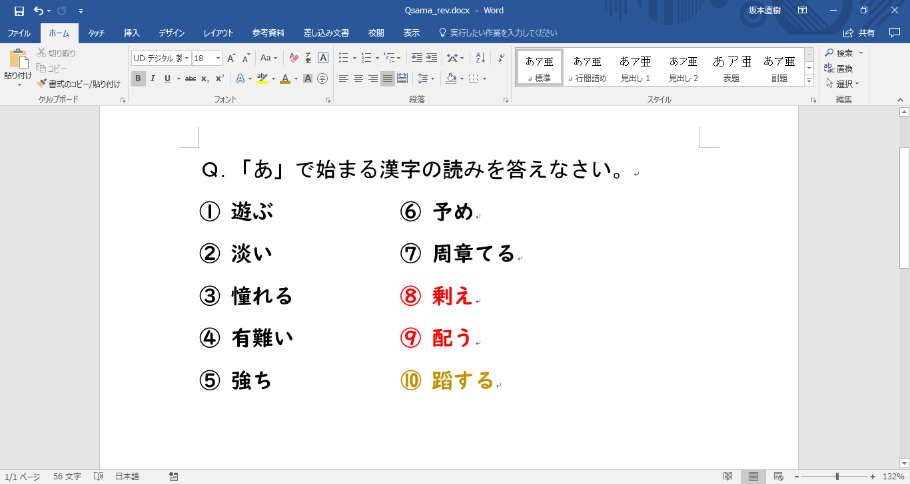

(´･ω･`)
(´･ω･`)
「・・・さて、」
(´-ω-`)
「漢字が好きすぎてこのサイトを作ってしまったわけですが、」
(´･ω･`)
「何事にも
(´･ω･`)
「今回はそんなお話です。」
(´･ω･`)
「では、どうぞ。↓」
＜サイト開設のきっかけ＞
私は子供の頃、ネットにハマっていました。
当時はYouTubeもなく、
その頃はいわゆる
多くのアニメーション作品がネットに投稿されました。
子供ながらに衝撃を受けましたし、
多くの
それからというもの、
私は見事にネット文化に溺れてしまいました。
フラッシュ集サイトで作品を模索し、
たまにビックリ系フラッシュに引っかかったのは
良い思い出です(？)。
※今はもう閉鎖されているようです。
素晴らしい作品に出会うきっかけとなってくれた感謝と、
そしてFLASHゲームも沢山作られ、
貧乏な私の学生時代の退屈を潤してくれました。
そんなこんなで高校生になり、
漢字の調査にもネットを駆使するようになりました。
いつものように漢字サイトを転々とし、
「この当て字は初めて見たな」
「えっ、これで
とか言いながら、漢字の大海原に浸ってました。
それぞれどこのサイトがご存じでしょうか？
どちらも素晴らしい漢字サイトです。
(ただ、右のサイトはちょっと一悶着ありましたが・・・)
そして、私はあるサイトに出会いました。
今のこのサイトと同じく、
現代では一般的なWebテスト形式でした。
でも、当時の自分にしてみれば興味深かった。
「おっ、漢字テストが受けられるのか。」
「自分の解答をその場で採点してくれるとは・・・」
しかもそのテストがやたらとムズい。
それもそのはず、
そして私が一番惹かれたのは、その
自分が作った問題を自由に公開でき、
私にとって魅力的でした。
なぜなら、私はもともと
のが大好きでしたから。
※より正確には
某番組みたいに「"あ"で始まる漢字の読み」を
①～⑩まで考えては
って妄想したりしていました。イタタタ
そしてWindowsのワード(文章編集ソフト)とかで
作成した問題を保存していました。
（ＰＣの買い替えの際にデータを移動し忘れて今はもう残ってない）

当時の作成データの再現
それが
これほど嬉しいことは他にない。
このサイトが生まれる
ここでちょっと尋ねたいのですが、
その
是非ともここで紹介したいと思っていたのですが、
一向に見つかりません。
どれだけ探しても見つからないので
消滅した可能性大なのですが、
もし知っていましたら私にご一報ください。
とりあえずサイトの情報を以下にまとめておきます。
・
・
・
・入力フォームに直接解答、最後の採点ボタンで点数算出。
・間違えた問題には答えが表示される。
・
・サイトのコンテンツの一つとして開設されていた。
いきなりお願いされて面食らったかと思いますが、
お時間のある方はぜひ探してみてください。
このサイトの先輩です(？)。